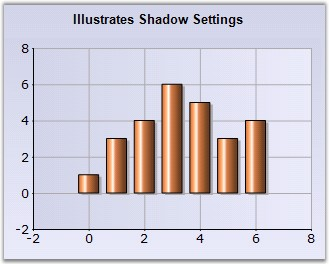

Specifies if the shadow should be displayed for the series.
|
Details | |
|
Possible Values |
True, False |
|
Default Value |
False |
|
2D / 3D Limitations |
Only 2D |
|
Applies to Chart Element |
All series and points |
|
Applies to Chart Types |
Area Chart, Bar Chart, Bubble Chart, Column Chart, Stacking Column Chart, Stacking Column100 Chart, Line Chart, Spline Chart, Rotated Spline chart, Stepline Chart, Candle Chart, Kagi Chart, Point and Figure Chart, Renko Chart, Threeline Break Charts, Gantt Chart, Histogram chart, Tornado Chart, Combination Chart, Box and Whisker Chart, Pie Chart, Polar And Radar Chart, Step Area Chart |
Here is some sample code.
Series wide setting
|
[C#]
this.ChartWebControl1.Series[0].Style.DisplayShadow = true;
//To display shadow for specific data points use Styles[] series1.Styles[0].DisplayShadow = true; |
|
[VB.NET]
Me.ChartWebControl1.Series(0).Style.DisplayShadow = True
'To display shadow for specific data points use Styles[] series1.Styles(0).DisplayShadow = True |

Figure 108: Line Chart with Shadow Series
Specific Data Point Setting
|
[C#]
this.ChartWebControl1.Series[0].Styles[0].DisplayShadow = true; this.ChartWebControl1.Series[0].Styles[1].DisplayShadow = true; |
|
[VB.NET]
Me.ChartWebControl1.Series(0).Styles(0).DisplayShadow = True Me.ChartWebControl1.Series(0).Styles(1).DisplayShadow = True |
See Also
Pyramid Chart, Funnel Chart, Area Charts, Bar Charts, Bubble Chart, Column Charts, Candle Chart, Renko chart, Three Line Break Chart, Box and Whisker Chart, Gantt Chart, Histogram Chart, Tornado Chart, Polar and Radar Chart, Pie Chart, Funnel Chart, Area Charts, Column Charts, Candle Chart